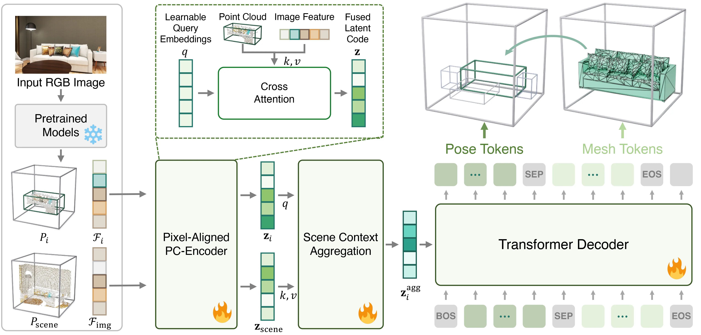
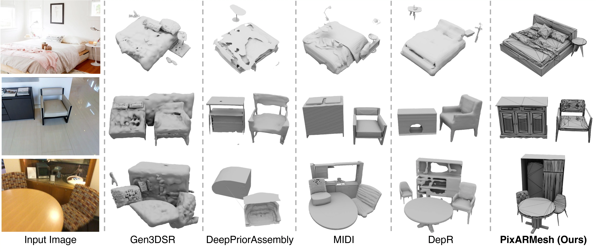

Input Image
Reconstructed scene (interactive)
We introduce PixARMesh, a method to autoregressively reconstruct complete 3D indoor scene meshes directly from a single RGB image. Unlike prior methods that rely on implicit signed distance fields and post-hoc layout optimization, PixARMesh jointly predicts object layout and geometry within a unified model, producing coherent and artist-ready meshes in a single forward pass. Building on recent advances in mesh generative models, we augment a point-cloud encoder with pixel-aligned image features and global scene context via cross-attention, enabling accurate spatial reasoning from a single image. Scenes are generated autoregressively from a unified token stream containing context, pose, and mesh, yielding compact meshes with high-fidelity geometry. Experiments on synthetic and real-world datasets show that PixARMesh achieves state-of-the-art reconstruction quality while producing lightweight, high-quality meshes ready for downstream applications.

Overview of PixARMesh. Given an RGB image, we use pretrained models to extract the depth point cloud and image features for both the target object and the global scene. These local and global cues are fed into the Pixel-Aligned PC-Encoder to produce the fused latent code, which is then aggregated into a single latent vector via cross-attention. This latent vector conditions the Transformer Decoder, which predicts the object's pose followed by its mesh token sequence.


PixARMesh provides a compact representation for scene reconstruction, using far fewer faces and vertices than prior methods while preserving high-quality geometry.
| Method | Faces | Vertices |
|---|---|---|
| InstPIFu | 1.94M | 971K |
| Uni-3D | 141K | 70.8K |
| BUOL | 55.5K | 27.8K |
| Gen3DSR | 364K | 217K |
| DeepPriorAssembly | 251K | 125K |
| MIDI | 1.94M | 968K |
| DepR | 320K | 160K |
| PixARMesh-EdgeRunner (Ours) | 7.1K | 4.3K |
| PixARMesh-BPT (Ours) | 7.5K | 4.1K |
@inproceedings{zhang2026pixarmesh,
author = {Zhang, Xiang and Yoo, Sohyun and Wu, Hongrui and Li, Chuan and Xie, Jianwen and Tu, Zhuowen},
title = {PixARMesh: Autoregressive Mesh-Native Single-View Scene Reconstruction},
booktitle = {Proceedings of the IEEE/CVF Conference on Computer Vision and Pattern Recognition (CVPR)},
month = {June},
year = {2026},
pages = {5881-5891}
}